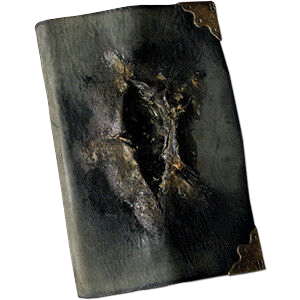

Harry Potter é um menino orfão de 11 anos, que mora com seus tios Durleys. Repentinamente ele recebe uma carta da aclamada Escola
de Magia e Bruxaria de Hosgwarts, convidando ele a estudar la a partir daquele ano. Seus tios ficaram umas feras, tentaram até impedir
de lê-la, porem Hagrid, o Guarda-Caça de Hogwarts, chega para leva-lo a escola.
A partir desse momento, Harry começa conhecer um mundo mágico que ele nem imaginava exisitir. E passa a viver grandes aventuras com
seus grandes novos amigos, Hermione Granger e Ronald Weasley.
| Livro | Filme | ||
|---|---|---|---|
| Título Original | Harry Potter and the Philosopher's Stone | Título Original | Harry Potter and the Philosopher's Stone |
| Publicação | 1997(Inglaterra) 2000(Brasil) |
Lançamento | 2001 |
| Editora | Bloombury Publishing | Distribuição | Warner Bros.Entertainment |
| Autora | Joanne Rowling | Diretor | David Yates |
| Ilustrador | Thomaas Miller Taylor | Roteiristas | Joanne Rowling Steve Kloves |
| Linha Temporal | 31 de outubro de 1981; final de 1991-inicio de 1992 |
Produtor | David Heyman |
| Nº de Págnas | 223 | Duração | 155 minutos |
| Gênero | Fantasia e Ficção | Gênero | Aventura, Fantasia, Família |
| País | Reino Unido | País de Origem | Estados Unidos da América Reino Unido da Grã-Betanha Irlanda do Norte |



 
